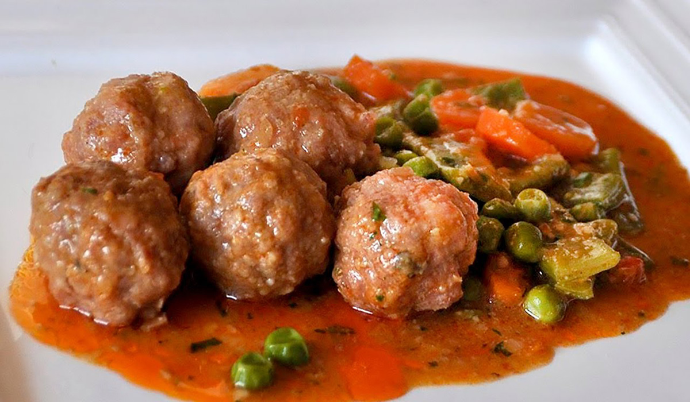
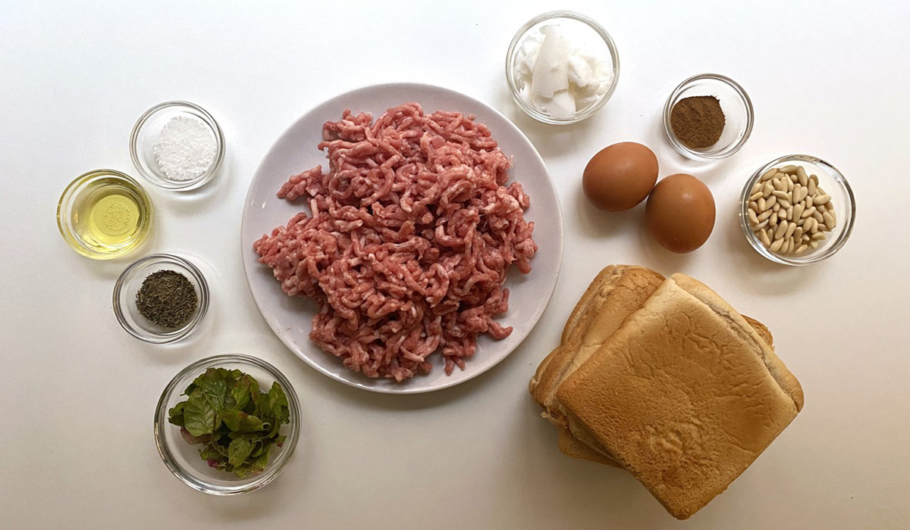
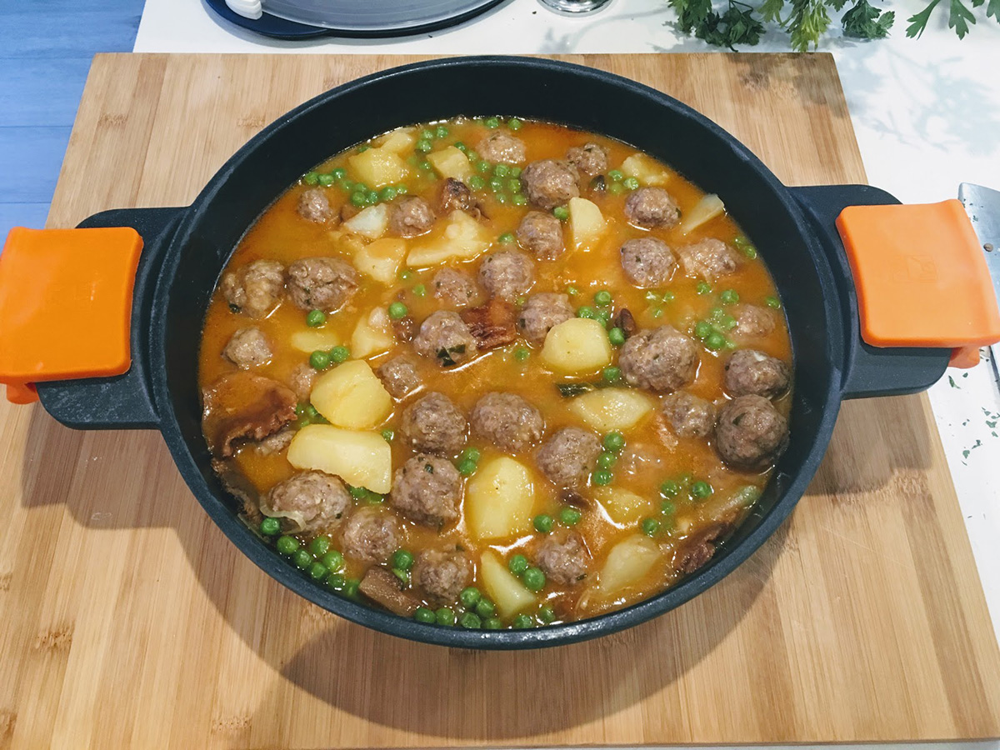

Aguiat de pilotes del Celler Son Guixa

Cuina de casa, feta a poc a poc
L’aguiat de pilotes és un plat de cullera que convida a compartir taula. Combina pilotes de carn, verdures i patates en una salsa saborosa, amb una elaboració que dona protagonisme a la cocció pausada.
Els ingredients
Per preparar aquesta versió utilitzam carn picada, ou, pa ratllat, all i julivert per a les pilotes. L’aguiat es completa amb patates, ceba, tomàtiga, pastanaga, pèsols, brou i oli d’oliva.

La preparació
Es mescla la carn amb l’ou, el pa ratllat, l’all i el julivert, es formen les pilotes i es dauren. A part, es prepara un sofregit de ceba i tomàtiga. S’hi afegeixen les verdures, les patates, el brou i les pilotes, i es deixa coure fins que la carn està ben cuita i les patates són tendres.
